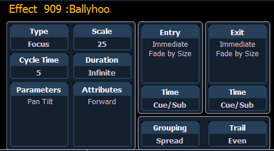
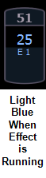
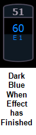

When viewing the effect list, the selected effect is displayed in the CIA. The effect properties/attributes are shown in categorized buttons in the CIA. To change any property/attribute, press the corresponding button and enter data as required.
Note: Some effect properties, such as rate and size, can only be modified in the Effect Status Display and in the Effect Channel Display .
The properties display of the effects editor is shown below and definitions of properties follow:

Defines the effect type: step-based, absolute, or relative (linear, focus, or color). To change the type, press {Type} and then press the desired effect type in the buttons to the left.
Applies only to relative effects. This modifies the amount the pattern is offset from the current parameter values. The scale is expressed as a percentage increase or decrease (25 = 25% of the programmed value).
Provides a cumulative time to complete one full iteration of an effect. In relative effects, the cycle time determines the length of time required for one channel to complete the cycle.
In absolute and step-based effects, the cycle time determines the time required to complete one full iteration of the effect. In these effect types, modifying the cycle time changes the timing values proportionally within the effect itself.
To change the cycle time, press {Cycle Time} and then enter the desired time (in minutes and seconds) from the keypad, followed by [Enter]. This can also be adjusted from the encoder.
This determines the length of time an effect will run. To specify, press {Duration/Cycle} and then choose the desired method from the buttons that appear to the left. The options are:
When an effect with duration is running in a cue, the effect will display in light blue while it is running and dark blue when it has finished. This is only displayed in the Live Summary View.


This allows you to select which parameters will be involved in the selected effect, by default. By entering a value here, you do not need to specify the required parameter when placing an effect on a channel group.
To add/ remove parameters to the effect, press {Parameters} and then select the desired parameters from the buttons that appear to the left.
These determine the basic behavior of the effect. Attributes include behaviors such as forward, reverse, bounce, positive, negative, and random grouping/ random rate. The attributes are slightly different between step, absolute, and relative effects.
Play with these behaviors to see how they alter your effect.
Establishes at what time and how channels will enter the effect. To change the entry method press {Entry} and then choose a method from the buttons to the left. Entry modes vary by effect type. The options are:
Establishes at what time and how channels will exit the effect. To change the exit method press {Exit} and then choose a method from the buttons to the left. Exit modes vary by effect type and how the effect is stopped. The options are:
These fields establish the length of time for channels to enter/exit the effect. It can be entered in minutes and seconds from the keypad. These timing values are applied to the entry and exit modes. Cue level timing is the default for these. Press {EnterTime} [Enter] or {Exit Time} [Enter]. To reset to defaults, press [Time] [Enter].
Grouping is used only in relative and absolute effects. This determines how channels currently running the effect will be grouped throughout the pattern. To change this press {Grouping} and then enter the number of lights you want grouped together.
Grouping defaults to {Spread}. This means that every light the effect is applied to will act as an individual element, moving through the effect sequentially based on the channel selection order, cycle time, and trail times. You can enter any number from 1 through 2000. A grouping of 2 means that every other light in the selection list when the effect is applied will move together through the effect. Grouping of three means every third light, and so on.
Your options are 1 through 84 or {Spread} which will distribute each channel in the effect evenly and treat it as a separate group.
When an effect is applied to a group in live, that group is distributed by order, using this grouping function. If a group list is created and an effect applied, each group is considered an individual element within the effect.
Trail is applicable to relative and absolute effects. Trail determines how channels are to follow each other through the effect; it is a percentage of the cycle time. Trail can be any value from 0-200%, even, or solo. The default is even. For example: